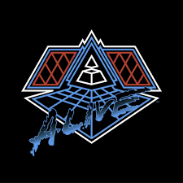
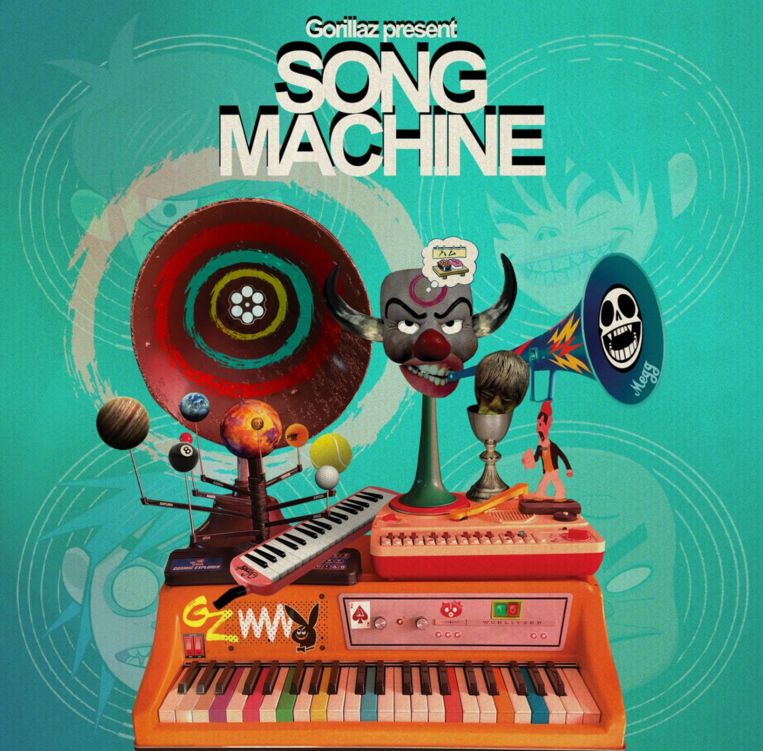

mijn muziek
playlists
Gorillaz - Humility
Daft Punk - One more time
Space Laces - Phone Tap
Marauda - Blunder 2.0
albums
Alive 2007
Song Machine, Season One: Strange Timez
The 2nd Law
festivals
Pukkelpop
Rock Wechter
Tommorowland
Graspop
Dour